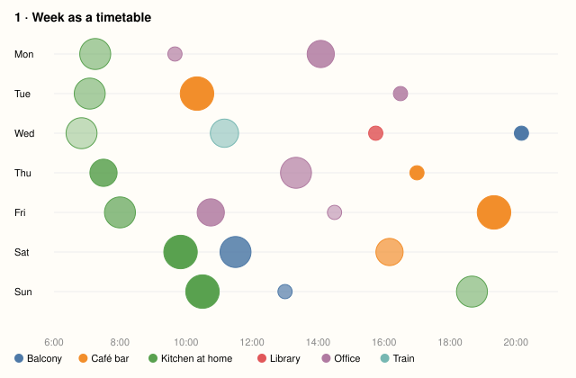
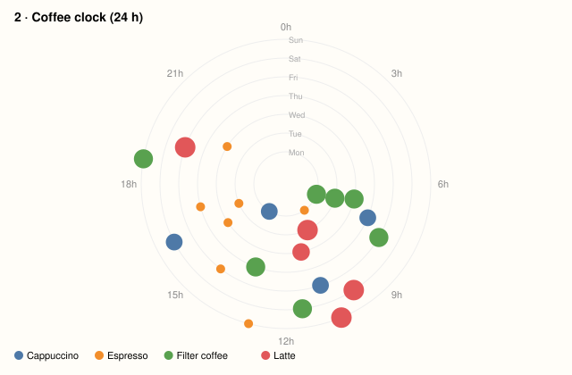
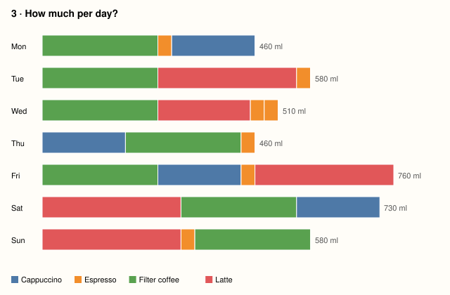
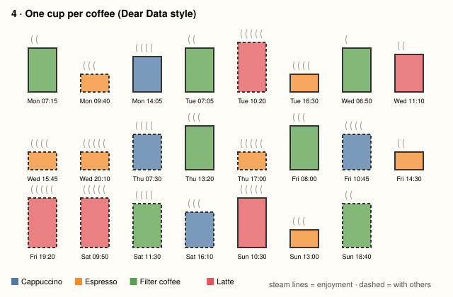
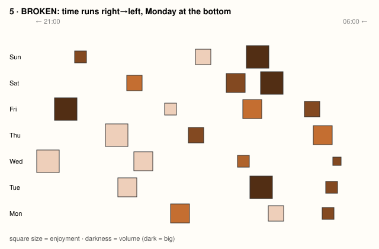
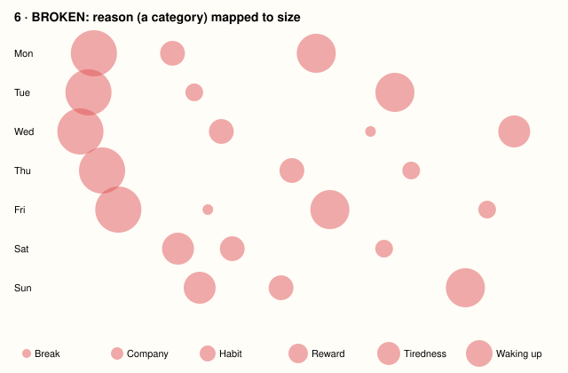

Mapping: x = time of day · y = day · circle area = volume · colour = place · opacity = enjoyment
Legibility: Conventional (reads like a calendar). Legible immediately; 'Reason' and 'Company' are lost.

Mapping: angle = time of day · ring = day (Mon inside → Sun outside) · size = volume · colour = coffee type
Legibility: Uses the learned 'clock' pattern; empty night sector is visible at a glance. Exact times harder to read.

Mapping: bar length = total volume per day · segment = one cup, ordered by time · colour = type
Legibility: Most familiar form (bar). Answers 'how much' instantly; loses time of day, place, mood.

Mapping: one glyph per coffee · cup height = volume · colour = type · steam lines = enjoyment · dashed outline = with others
Legibility: Shows 5 dimensions per mark, needs a short 'how to read it' — the legend is part of the graphic.

Mapping: x = time, but reversed (right→left) · y = day, Monday at the bottom · lightness = volume · size = enjoyment
Legibility: Breaks 2 conventions. Everyone first reads it left→right and gets the day backwards; quantity as lightness is hard to compare.

Mapping: x = time · y = day · circle size = reason (alphabetical!)
Legibility: Deliberate mistake: size claims an order ('Waking up' > 'Break') that isn't in the data. The ranking is invented by the mapping.